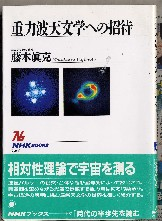

相対性理論というのは、どう考えてもうさんくさい。時の進みは、誰がどこにいても何をしていても同じに決まっている。ロケットの中に流れる時間と、地球上の時間が異なるなんてバカなことがあるもんか。
そう云うと、みんなやたらと記号やら数字やらを並べ始める。そんなもん、記号や数字を並べたてれば済むと思ったら大間違い。たとえば電波。ラジオは聞こえる、テレビは写る。そこでさわることも目で見ることも出来なくても、電波が存在することは誰でも分かる。しかし相対性理論なんてのは、紙の上でしか主張できない。悔しかったらオレにも分かるような形で実証してみろ。
と言うわけで、長い間、相対性理論をはねつけていた。ところが、どうしても受け入れざるをえない自体が発生してしまった....
最近は、電波時計がおおはやり。我が家にもいくつかある。もともと正確な時計が好きなので、（いや、電波時計は素晴らしい）と大いに満足。聞くところによるとこの電波時計、原子の振動数で算出した時刻を送信しているとか。なるほど、それはすごい。原子の振動を基準にしているなら、“正確無比”に決まっていると、いたく感心していた。
ところが先般、「重力波天文学への招待(藤本真克・NHKブックス・4-14-001681-7)」という本を読んだ。

その中に次のような件(くだり)があった。
理想的な原子時計であっても、時計の置かれた場所の重力ポテンシャルの大きさや運動速度が違えば、それぞれの時計の進み方は異なる。
−中略−
そこで世界各地の、およそ150台の原子時計の平均を取って決めている。しかしそれぞれの時計の平均的海水面からの高度は異なる。そこで平均値を算出する前に、一般相対論を用いて平均海水面での１秒間隔に換算する。
なんと愛用の電波時計で示される時刻は、相対性理論に基づいて調整されていた。
また現在、多くの人工衛星が飛んでいる。地球の周りを高速で回っているので、人工衛星時間と地球時間は異なる。そこで“両者の時間を合わせるため、相対性理論に基づいて常に調整されている”とも書いてあった。
日常製品で実証されている以上、テレビ・ラジオの電波と同様、相対性理論の正しさを受け入れざるを得ない....しかし複雑な麻雀の点数を瞬時に計算できるσ(-_-)が、まさかE＝MC2という単純計算しかできないアインシュタインごときに負けるとは思わなかった.....(-_-)
地球は平ら協会 日本代表 あさみ りょう
|